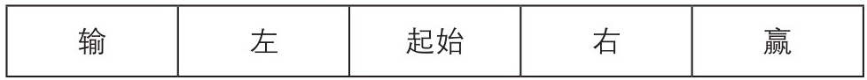

在这本书的开头，我曾经说过一些概率问题第一眼看上去有违常识。随着故事的逐渐呈现，相关的例子已经讲述过了。这里呈现一些直觉会产生误导的情况，但是足够小心的话，这些表面上的矛盾都是可以解释的。概率这门学科已经完全不含有真实的悖论了。
但是即使概率知识能够帮助我们做出合理决定，我们也许仍然会发现，就算是考虑某个特定事情的概率也可能会遇到棘手的问题。
帕隆多悖论
格雷厄姆·格林(Graham Greene)的小说《败者为王》(Loser Takes All)是一本好书，但是它基于一个错误的前提：有一些巧妙的基于数学的下注组合方法能让玩家占有优势而不是庄家。但数学家们已经证明，在每一场赌局单独来看都是对庄家有利的时候，无论怎样组合都不会扭转局面对玩家有利。对不起啦，朋友们。
胡安·帕隆多(Juan Parrondo)告诉你，你务必十分明确地阐述如下一般论断：在所有赌局都对一方有利的时候，无论何种情况我们都不可能找到一种组合让另一方有优势。我在这里描述一种他的思想的变体，其来自迪恩·阿斯图米安(Dean Astumian)，他描述了一种依托于一张画有5个格子的纸板的简单游戏，如图11。(这不是一个认真的 游戏。它的存在只是为了阐述上述观点)

图11 阿斯图米安的游戏纸板
你需要一种生成可能性为1%的随机事件的方式：也许是一个装有99个白球和1个黑球的袋子，或者一个会等可能地停在100个小格中的转盘。游戏开始时，在标有“起始”的格子中放一个标记物。每一次移动都将标记向左或者向右移动一格，如果在到达赢之前没到过输就算胜利。
一共有两组基本规则，我们叫它们A和B。在规则A中，你总是会从起始移动到左；你一定会从右移动到赢；你会在左使用转盘，有1%的概率移动到输，99%的概率移动到起始。在规则B中，你在起始使用转盘，有99%的概率移动到右，1%的概率移动到左；在右，你总是从右移动到起始；你在左时，情况和规则A中一样——转盘给出1%的概率移动到输，99%的概率移动到起始。
对这个游戏的分析是很简单的，在规则A中，没有规则允许移动到右；你在起始和左之间往复移动，直到随机概率使你从左移动到输。在规则B中，你经常在起始和右之间移动，而偶尔移动到左。最终，在其中一次经过左的时候，随机概率使你移动到了输。在这两种游戏中，移动到赢的概率都是0。
在一个新的游戏规则C中，你需要一枚公正的硬币。在每次移动前，掷一次硬币：如果正面朝上，使用规则A；如果背面朝上，使用规则B。
结果是你在规则C中取胜的概率超过了98%!很容易就可以阐明为什么游戏对你十分有利：如果你到了左，你非常有可能安全回到起始。从起始，有一半可能你使用规则B，有99%的概率到达右；而在右，你有一半概率使用规则A，必然会取胜。
遵循着规则A和B，你一定 会输：在两种规则之间交替，你几乎每次都会赢!悖论中 构筑一个排除了上述例子的数学命题需要非常严谨的语言描述，这也就说明了格林的结论其实摇摇欲坠。
2 + 2 = 4，还是2 + 2 = 6？
假设我们用一个公正的硬币来实现伯努利试验，也就是说，每次投掷硬币结果都是独立的，且正面(Heads)反面(Tails)是等可能的。典型的结果是HHTHTTTHT……要掷出H的平均等待投掷次数是2；但是要掷出HT，或者HH的平均等待投掷次数是多少呢？
直觉上讲，答案是4，因为我们预计会等2次投掷来得到第一个标志H，等2次投掷得到另一个标志T。我们等待HT的平均投掷次数的确是4，但对于HH不是 这样。为了看到这种样式，平均投掷次数是6!
有这种不同是因为，要得到HT，认为我们预计得等2次才得到H是正确的，而要再等2次才得到T从而完成这个样式。2加2等于4。但是对于HH，在我们得到第一个H的时候，下一次投掷有一半的可能性会掷出T，我们就得重新开始了——之前得到H的所有次数就都浪费了。得到正确答案的计算过程在附录中。
H与T两者中一个先出现是等可能的；那在HH与HT之间呢？再一次地一个比另一个出现得早是等可能的，因为我们必须等到第一个H出现，之后下一次投掷决定了最终结果。然而，在HH与TH之中，后者首先出现的可能性是前者的3倍!原因很简单：序列由HH开始的可能性是1/4，但是除非这样，那么不可避免地TH首先出现(思考一下这是为什么)。
彭尼赌局游戏(Penney-ante)就是基于上述的观点。你请你的对手选择8个可能的长度为3的一组结果中的任何一个，比如HHT，或者THT等，它们都可能会是连续3次投掷公正硬币的结果。之后你选择一个不同的结果，一个中立的人重复投掷硬币，选择了首先出现的结果的那个人获胜。
尽管表面上看你大方地允许你的对手先选择，但是这个游戏是对你有利的——如果你知道你应该做什么的话。无论她选择了什么，你都可以选择一个有至少2/3可能性比她的样式先出现的样式!获胜的秘诀在附录中。
给我点暗示……
1. 三张形状大小完全相同的双面卡片装入一个袋子中。其中一张两面都是蓝色，另外一张两面都是粉色，最后一张一面是粉色，另一面是蓝色。随机选择一张卡片，可以看到它的一面是粉色。另一面更有可能是蓝色还是粉色呢？或者说可能性相等？问题交给你吧——下面有回答。
2. 细致的计算表明，从洗好的牌堆中分发出来的一副13张的桥牌，有26%的可能性包含2张或者更多张A。你给露西发牌。对于问题：“你的手牌中至少有一张A吗？”她的回答是“是的”。在另一个情形中，你给蒂娜发牌，并问：“你的手牌中有黑桃A吗？”她的回答也是“是的”。哪一副手牌更有可能包含2张或者更多张A？或者说可能性相等？答案在下面。
3. 假设1000名男性和1000名女性都有令人满意的资质，但有480名男性和仅240名女性获得大学录取资格。这是不是明确的性别歧视——男性被录取的概率是女性的2倍？
答案是什么呢？在粉/蓝卡片问题中，看到粉色就明确地排除了两面均蓝色卡片的情况。所有3张卡片都是完全相同的，只有两张剩下了，粉/粉和粉/蓝。这些卡片中的一张，背面是蓝色的，而另一张，背面是粉色的。似乎粉色和蓝色是同样可能的。
这个推理过程是草率的：粉色的可能性是蓝色的两倍，你可以通过重复进行十几次这个试验来验证这件事。更好的理解是，注意到这些卡片中有3个粉色面，所有这些面都等可能地被看到。但是只有一个粉色面的背面是蓝色——而有两个粉色面的背面是粉色(你可以使用贝叶斯公式，但是那就是杀鸡用牛刀了)。
一名贫困的研究生，瓦伦·韦弗(Warren Weaver)，同时也是信息论 (Information Theory)的创建者之一，就曾经不断地和其他学生玩这个游戏并赢钱，教育了要他们了解概率的效用。
在牌组问题中，我们知道两个情况中手牌里都有至少一张A，许多人都会认为蒂娜和露西有2张或者更多的A是等可能的——所有的A都是等可能被抽到的，所以为什么蒂娜承认她有特定的一张黑桃A就会带来不同呢？请你丢掉这些想法，来做正确的计算。
对于露西来说，在有至少一张A的手牌中，我们可以算出有2张或者更多A的比例——大约37%。对于蒂娜，除了黑桃A，她还有另外12张手牌，从剩余的51张中随机选取。手牌中包括另一张A的可能性是56%：蒂娜远比露西更有可能持有2张或者更多A。
你的怀疑心告诉你第三个问题正确的答案是“否”。假设在英语系，950名女性申请者中的20%，以及50名男性申请者中的10%被录取了；在商学院，所有的50名女性得到了录取资格，但是950名男性中只有一半被录取。求和得到：240名女性和480名男性被成功录取，但是，在每一个院系 ，女性的录取率都是男性的2倍。有歧视的话也是针对男性的，而不是女性!
确实，在真实世界中，伯克利 [1] 研究生院的几千名申请者中，44%的男性被录取，而只有35%的女性被录取。然而，当申请数据被分配给不同的院系的时候，男性和女性的录取比例就几乎没有差距了。但是不同的院系的录取率的确不同，而那些对两种性别都只录取很小比例的院系，女性申请者最多。
这个反直觉的结果是辛普森悖论 (Simpson’s Paradox)的一个例子。它展示了相较于对绝对数字的操作，对比例的操作是很危险的，这种情况到处都会发生。
这一切都不只是好玩。除非你知道数字的真正含义，不然你没有正当理由来说你会用数字。
你真的想知道吗？
我曾经说概率是在不确定性中做决定的关键，我也不会收回我说的话。但更加精确地理解概率或者在新的情境中理解概率都会带来一些令人不舒服的难题。
现在，个人可以对自己整个遗传密码进行测序，但是诺贝尔奖获得者詹姆斯·沃森(James Watson)和哈佛大学心理学家史蒂芬·平克(Steven Pinker)都选择不去知道他们携带的一种被叫作APOE的基因的版本。有一个epsilon4版本的这种基因会让患上阿尔茨海默病 [2] 的概率上升4倍，而有两个这种基因会让概率升高20倍。(矛盾的是，有这种epsilon4基因也与一个人某些年轻时的益处相关。)另一名诺贝尔奖获得者，克雷格·文特尔(Craig Venter)，知道他的确有一个epsilon4基因。一家研究实验室有从不 向志愿者透露其APOE基因情况的政策，理由是基于现在人类掌握的知识，没有治疗可以减轻其带来的消极影响。
但是一些商业公司也许会对你的APOE基因的情况(实际上是你的全部基因组)非常 感兴趣。如果你的基因组成暗示着你早逝的概率非常高，它们也许会愿意大幅提高养老金——但是也可能会要求更高的医疗保险费。拥有某个人全部基因信息的公司可能会“提供”定制服务，完全按照客户的预期寿命量身定制。
约翰和汤姆都是65岁，每个人都会花费15 000英镑来购买养老金；比如说正常的剩余预期寿命是15年，但是约翰的基因暗示着长10年的寿命，而汤姆是缩短10年。不考虑基因情况的A公司对两人每年都提供同样1000美元的养老金。但是B公司考虑到了基因信息，向汤姆每年提供3000美元的养老金，但只向约翰每年提供600美元。
回想那条格言：从长远来看，平均统领一切。两个人都会接受更高的出价，所以A公司将会给像约翰这样的人支付25 000美元，每次都会损失10 000美元；同时B公司将会向汤姆和他这个类型的人支付15 000美元，所以收支平衡。A公司将会倒闭。而B公司会生存下来。
如果只有像B那样的公司才能生存下来，那么我们可以预见到那时会有许多不幸的人，他们要么是根本无法支付医疗或者旅游保险，要么因为被提前告知储蓄不足，导致退休计划被严重扰乱。
律师在诘问中应该只去问那些他们已经知道答案的问题。在你想要对自己的基因组进行测序的时候，要确保自己对你可能得到的消息有充分的准备。考虑一下人生中的所有阶段：在孩子出生时的基因组情况的打印件也许会带来晴天霹雳；想结婚时，你和与你订婚的人是否应该去了解你们孩子患有严重疾病的可能性？你的老板是否应该有权利因为你患某种疾病的风险较高而拒绝你的晋升？高级公职人员，比如总统或者首相的候选人，是否应该公开他们的基因组信息，以便投票者进一步了解任何基因层面的不稳定因素？
随机选择一名英国女性，其罹患乳腺癌的可能性是12%。但是如果她继承了特定的被称为BRCA1或者BRCA2基因的突变，这个概率就会升到60%。一名有3个孩子的母亲，在一名姐妹有这种突变的情况下，接受医学检测，而如果她接受了检测而且收到坏消息，她的女儿(如果有女儿的话)应该在什么年龄被告知她们每个人都有50%的概率继承了这种突变？
无论你在这些令人不舒服的情形中感受到了什么，要记得这只是“概率”而不是“事实”。如果艾玛有这种突变的概率是10%，而菲奥娜的概率是60%，结果也有可能是艾玛患有乳腺癌而菲奥娜没有。如果她们知道自己有这种突变的概率，她们也只能按照自己的方式来处理这件事情。在此重复一下决策论的核心信条：合理的决定是能最大化结果的平均效用。你永远不能确定自己采取的行动会带来最好的结果，但是你已经充分利用了你所拥有的信息。你不能要求更多了。
全书完
[1] 此处应指加利福尼亚大学伯克利分校(University of California, Berkley)。
[2] 阿尔茨海默病(Alzheimer’s disease)，俗称早老性痴呆症，是一种发病进程缓慢、随时间不断恶化的神经退行性疾病。